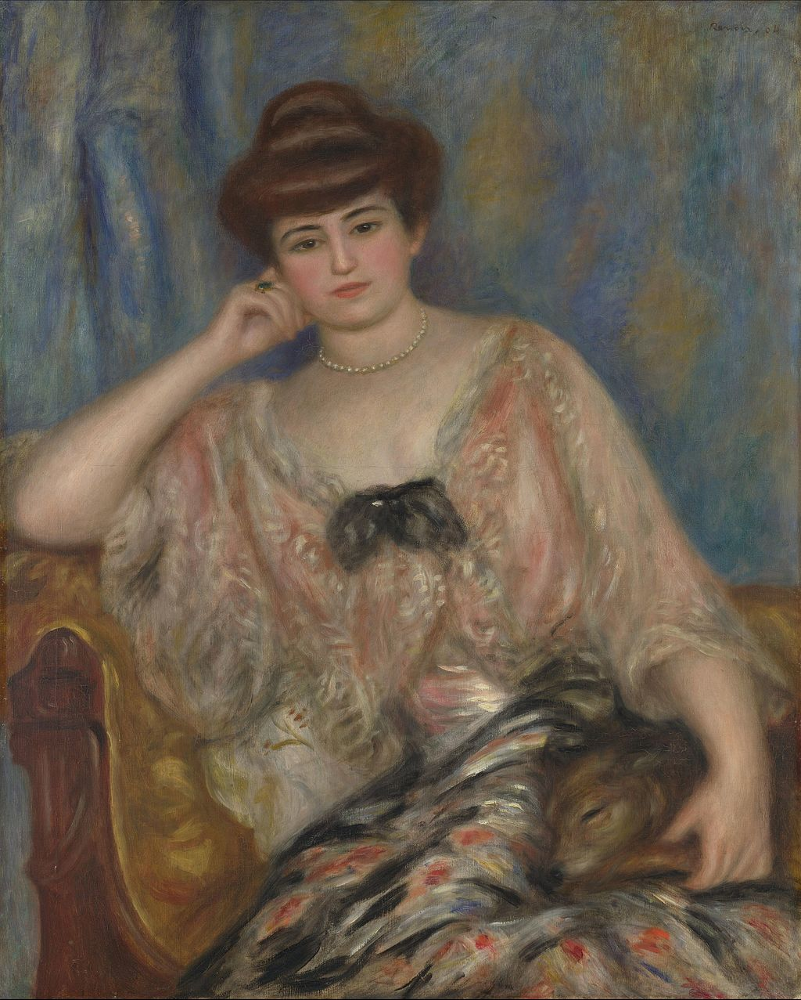

<head>
<meta charset="UTF-8" />
<meta name="keywords" content="drawing, painting" />
<meta name="description" content="drawings by Sunjy" />
<title>Sunjy</title>
<link rel="shortcut icon" type="image/x-icon" href="../../mImages/mCommon/favicon.ico" media="screen" />
<link rel="stylesheet" type="text/css" href="../../mCsses/mCommon/mCssA.css" />
<link rel="stylesheet" type="text/css" href="../../mCsses/mCommon/mCssB.css" />
<link rel="stylesheet" type="text/css" href="../../mCsses/mCommon/mCssC.css" />
<link rel="stylesheet" type="text/css" href="../../mCsses/mCommon/mCssD.css" />
<link rel="stylesheet" type="text/css" href="../../mCsses/mContent/mCssA.css" />
<link rel="stylesheet" type="text/css" href="../../mCsses/mContent/mCssB.css" />
<link rel="stylesheet" type="text/css" href="../../mCsses/mContent/mCssC.css" />
<link rel="stylesheet" type="text/css" href="../../mCsses/mContent/mCssD.css" />
</head>
<script type="text/javascript" src="../../mScripts/mContent/mContentAA.js" /></script>
<script type="text/javascript" src="../../mScripts/mContent/mContentAB.js" /></script>
<script type="text/javascript" src="../../mScripts/mContent/mContentAC.js" /></script>
<script type="text/javascript" src="../../mScripts/mContent/mContentAD.js" /></script>
<script type="text/javascript"></script> 
<script type="text/javascript">
document.write('<div class="mImgAbsolute"></div>');
/*
document.write('<p class="mFontSizeBColor" />From a white paper...</p>');
document.write('<table class="center"><tr><td>');
document.write('');
document.write('</td></tr></table>');
*/
</script>


<script type="text/javascript">
document.write('<p class="mFontSizeBColor" />Portrait of Misia Godebska-Sert</p>');
document.write('<p class="mFontSizeSColor" />“Portrait of Misia Godebska-Sert” by Pierre-Auguste Renoir shows Misia Sert, née Godebska, who was a notable figure in the circle of artists in Paris at the turn of the century.<br><br>She first married in 1903, and later she married the Spanish painter José Maria Sert, and it is as Misia Sert that she is most remembered. <br><br>Misia Sert (1872 – 1950) was a pianist of Polish descent who hosted an artistic salon in Paris and was a patron and friend to numerous artists.<br><br>Misia Sert<br><br>Misia Sert, at age fifteen, argued with her stepmother, which caused her to leave home and move to London. After several months she returned to Paris, taking her lodgings and supporting herself by teaching piano to students.<br><br>At the age of twenty-one, she married her twenty-year-old cousin. Their home eventually became a gathering place for such cultural lights as Marcel Proust, Claude Monet, Pierre-Auguste Renoir, Paul Signac, and Henri de Toulouse-Lautrec.<br><br>The entertainment was lavish, and all were mesmerized by the charm and youth of their hostess. Sert appeared in advertising posters created by Toulouse-Lautrec, Édouard Vuillard, and Pierre Bonnard, plus she featured in several Renoir portraits.<br></p>');
document.write('<table class="center" /><tr><td>');
document.write('<br>She first married in 1903, and later she married the Spanish painter José Maria Sert, and it is as Misia Sert that she is most remembered. <br><br>Misia Sert (1872 – 1950) was a pianist of Polish descent who hosted an artistic salon in Paris and was a patron and friend to numerous artists.<br><br>Misia Sert<br><br>Misia Sert, at age fifteen, argued with her stepmother, which caused her to leave home and move to London. After several months she returned to Paris, taking her lodgings and supporting herself by teaching piano to students.<br><br>At the age of twenty-one, she married her twenty-year-old cousin. Their home eventually became a gathering place for such cultural lights as Marcel Proust, Claude Monet, Pierre-Auguste Renoir, Paul Signac, and Henri de Toulouse-Lautrec.<br><br>The entertainment was lavish, and all were mesmerized by the charm and youth of their hostess. Sert appeared in advertising posters created by Toulouse-Lautrec, Édouard Vuillard, and Pierre Bonnard, plus she featured in several Renoir portraits.<br>" />');
document.write('</td></tr></table>');
</script>


